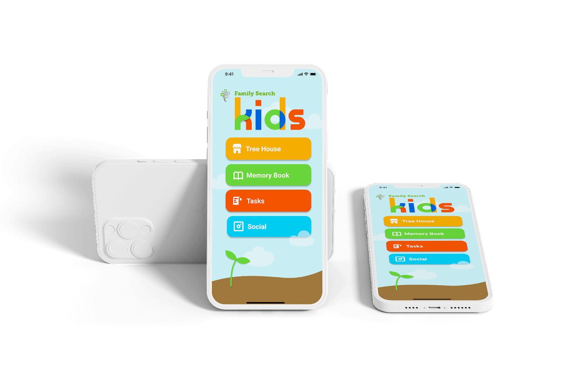
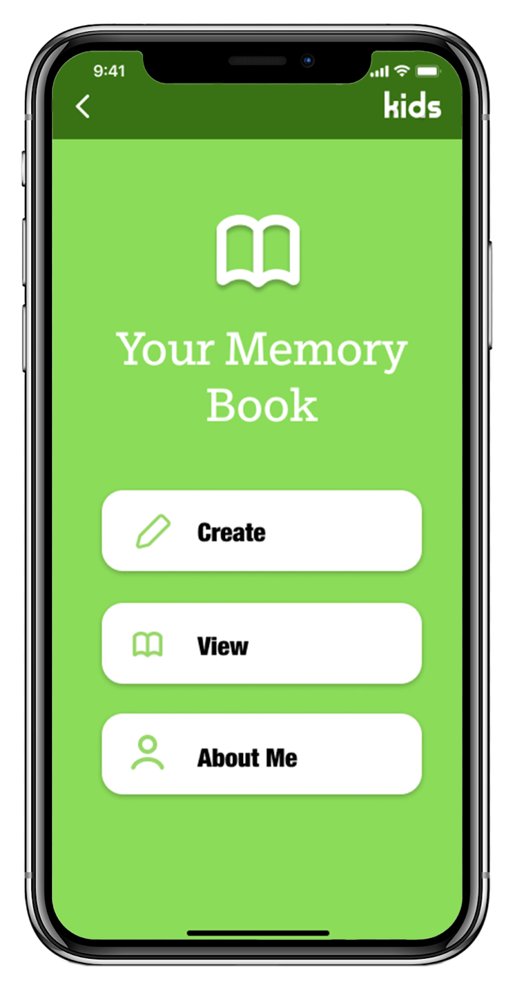
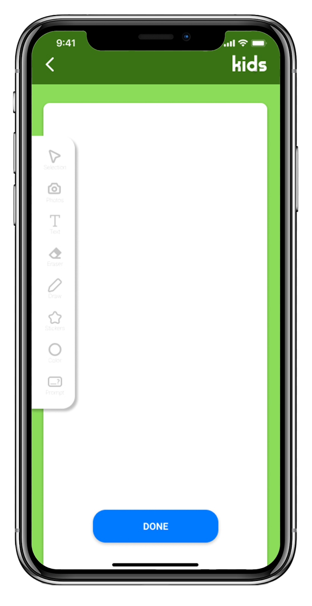
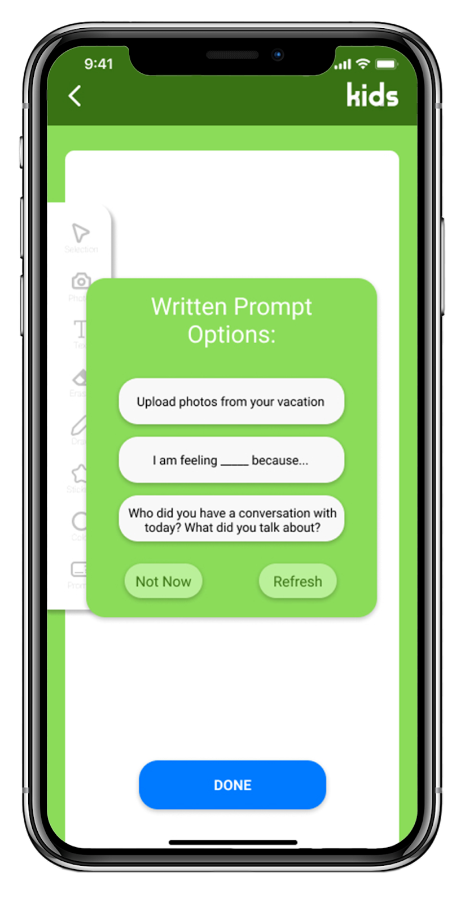
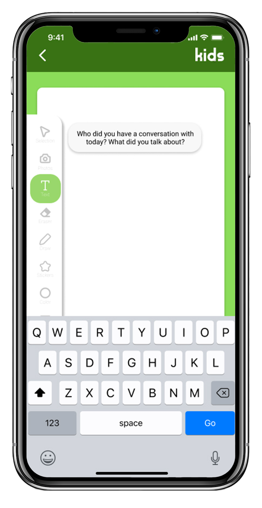
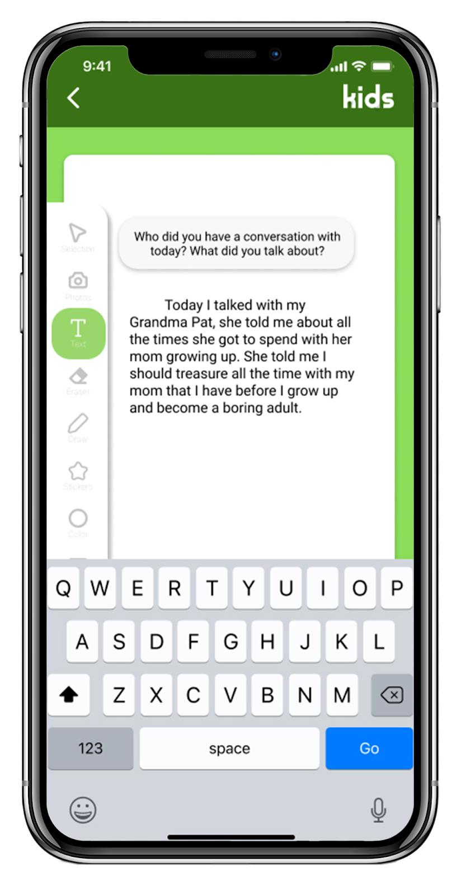
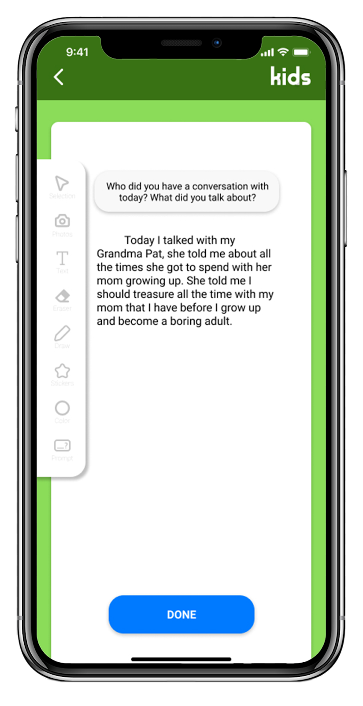
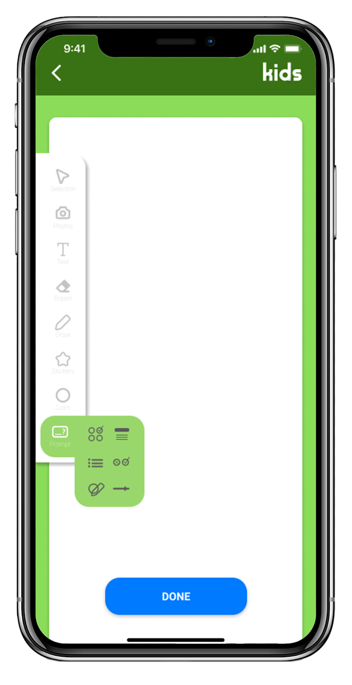
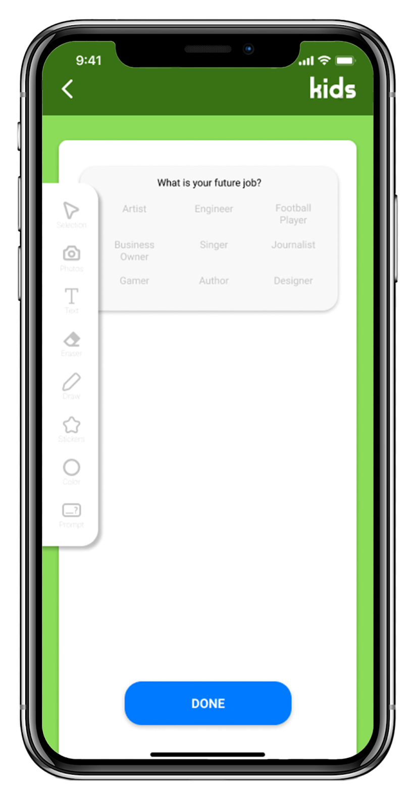
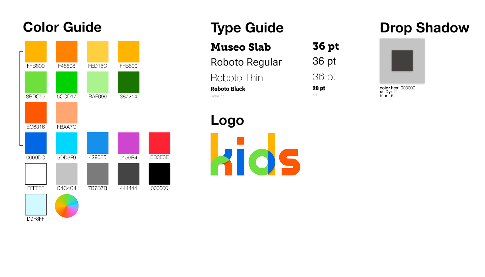

What is Sketch Comedy?
Sketch Comedy is a form of comedy that utilizes story
telling and visual comedy in contrast to stand-up or
improv comedy. It differes from comedic film in that it
is normally found in short form (1-10 minutes long).
Can I make Sketch Comedy?
Anybody can write good sketch comedy. Sketch comedy is
different than stand-up or improv because it is
relatable. Sketch comedy tells stories, and even if the
stories are in wild fantastical settings, the actions of
the characters mimic reality. Anyone who can relate to
the human experience can enjoy and create good sketch
comedy.
What do I need to do?
In this article we will go over the steps neccessary to
get you started making your own sketches
- Take Notes EveryDay
- Push it one step to the extreme (what if…)
- Subvert expectations (punchline)
- Create the outline/storyboard
- Get your props
- Find your personal style
- Post your own sketch

Ideas come when you least expect it. You cannot expect to be
able to just sit down and think of good ideas when you need.
You must be open to good ideas at any time.
Three tips to better ideas
Take Notes
The first thing you need to do is to keep a notebook. Or
just take notes on your phone, it doesnt matter. As long
as you can have it anywhere you go and can jot down
ideas before they escape your brain. I keep a small
notebook in my pocket or backpack wherever I go.
Write Down Everthing
Not every idea will seem like a winner. It doesn't
matter, write it down anyway. Anything that made you
think for more than a second. Maybe you trip over the
sidewalk, have an awkward conversation, or something
just makes you luagh. There are no restrictions at this
stage.
Additional Details
It is important to add details to your ideas, but don't
let that limit you either. You can even add notes to an
idea well after the idea was thought up. This way you
can have several ideas growing and evolving before
they're ready to hatch
It is important to add details to your ideas, but don't let
that limit you either. You can even add notes to an idea well
after the idea was thought up. This way you can have several
ideas growing and evolving before they're ready to hatch
-
Push it one step to the extreme (what if…)
This is where some brainstorming will come in, take some of your best notes and push them into new territory. Channel your childish humor and ask the classic “what if…” question. Don't be afraid to get wacky, not all ideas will be winners, but it will unlock your creative potential.
Example:
“self-checkout machines are annoying”
What if the machine made the process annoying on purpose because of a personal vendetta against you?
What if the self check-out machine was playing in a poker game?
What if the machine threatened to blow up if you didn't have a rewards member id?
Now you can see where the story begins to unfold. These “what if” questions begin a story, and your brain fills in the details.
Subvert Expectations
Most comedy sketches will have some sort of punch line. A punchline is a crucial detail that changes the context of the previous set up. The secret to a good punchline is to subvert expectations of the audience.
This does not mean “random = funny”, punchlines need to be relatable/understandable as much as they are unexpected. Some punchlines send the sketch into a whole new level of extreme, while others pull an extreme situation back to reality. Some punchlines are very abrupt and the suddenness alone is funny, others are incredibly subtle and the underlying message or tone is what pulls it through
Example
Your “what if” question could be the punchline, or it could simply be the setup to the punchline
Turns out the self-checkout machine doesn't have a personal vendetta against you, it has a crush on you and wants to spend more time with you.
Even thought the self-checkout machine is keeps winning it turns out that its just a regular machine.
The bomb threat was just a ploy from the store to get people to use their dumb rewards system.
-
Scenario
You were baptized today! Your mom took your photo so
you'll always remember your special day. You are so
excited to share the news. Use the Family Search Kids
app you downloaded to upload the photo, type a
description, and then send the photo to your Grandma
Paula.
These screens are the result of exploring how to implement
gaming into the social media position of the app as a way to
encourage family interactions.
-

Memory Book Home Screen
-

Main “Create” page
-

“Create” page with written prompt options
-

“Create” page with writing prompt inserted.
-

Text tool is selected
-

“Create” page with prompt and entered journal entry
-

“Create” page with journal entry, after keyboard is
cleared
-

“Create” page with multiple choice prompt
-
“Create” page with filled out multiple choice prompt
On the far left is screen for the “About Me” button on the
home of the Memory book screen. Here, a kid could fill out
information about themselves each year, so they can see how
they change.
In the middle is the landing page for the “View” button. Here
they can see a spread of pages.
On the right is show the tools that we have developed on the
tool bar like the photo, sticker, and color features.
Game
-
Avatar of self and relatives walking around different
rooms.
- Buying extra rooms in the shop.
-
A grid set up for placing items in the treehouse for
more customizing.
Social
-
We added an icon and some screens for a game idea that
could be implemented in the Social section of the app.
We think a game would create more personal interactions
with living relatives.
-
We added a profile screen that the user could
personalize. Profile could not be viewed from the
internet… only family members that the parents have
allowed to follow the child can view the content.
Memories
- Toolbar menus can be expanded.
-
Additional visual journaling prompt can be added to
prompt menu.
-
The “About Me” feature are designed to have more
sections for the user to input information about
themselves for each age.
-
It would be really cool to have the “About Me” sections
available to share with family members so they can all
view their favorites.
Color Palette

Final Product Overview